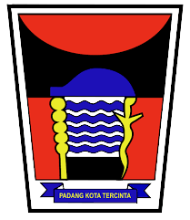
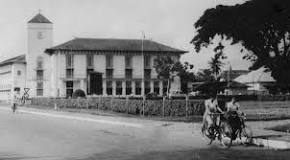

Padang adalah kota terbesar di pantai barat Pulau Sumatra dan ibu kota provinsi Sumatra Barat, Indonesia.
Kota ini merupakan pintu gerbang barat Indonesia dari Samudra Hindia.[7] Secara geografi,
Padang dikelilingi perbukitan yang mencapai ketinggian 1.853 mdpl dengan luas wilayah 693,66 km²,
lebih dari separuhnya berupa hutan lindung. Berdasarkan data Badan Pusat Statistik (BPS) pada 2021,
kota ini memiliki jumlah penduduk sebanyak 909.040 jiwa.[3] Padang merupakan kota inti dari pengembangan wilayah metropolitan Palapa.
Sejarah Kota Padang tidak terlepas dari peranannya sebagai kawasan rantau Minangkabau,
yang berawal dari perkampungan nelayan di muara Batang Arau lalu berkembang menjadi bandar pelabuhan yang ramai setelah masuknya Belanda
di bawah bendera Vereenigde Oostindische Compagnie (VOC). Hari jadi kota ditetapkan pada 7 Agustus 1669, yang merupakan hari penyerangan
loji Belanda di Muara Padang oleh masyarakat Pauh dan Koto Tangah. Semasa penjajahan Belanda, kota ini menjadi pusat perdagangan emas,
teh, kopi, dan rempah-rempah. Memasuki abad ke-20, ekspor batu bara dan semen mulai dilakukan melalui Pelabuhan Teluk Bayur. Saat ini,
infrastruktur Kota Padang telah dilengkapi oleh Bandar Udara Internasional Minangkabau serta jalur kereta api yang terhubung dengan
kota-kota lain di Sumatra Barat.
Sentra perniagaan kota berada di Pasar Raya Padang, dan didukung oleh sejumlah pusat perbelanjaan modern dan 16 pasar tradisional.
Padang merupakan salah satu pusat pendidikan terkemuka di luar Pulau Jawa, ditopang dengan keberadaan puluhan perguruan tinggi,
termasuk tiga universitas negeri. Sebagai kota seni dan budaya, Padang dikenal dengan legenda Malin Kundang dan novel Sitti Nurbaya.
Setiap tahunnya, berbagai festival diselenggarakan untuk menunjang sektor pariwisata. Di kalangan masyarakat Indonesia, nama kota ini
umumnya diasosiasikan dengan etnis Minangkabau serta masakan khasnya dikenal sebagai masakan Padang.[8]

Tidak ada data yang pasti siapa yang memberi nama kota ini Padang. Diperkirakan kota ini pada awalnya berupa sebuah lapangan,
dataran atau gurun[9] yang luas sehingga dinamakan Padang. Dalam bahasa Minang, kata padang juga dapat bermaksud pedang.[10]
Menurut tambo setempat, kawasan kota ini dahulunya merupakan bagian dari kawasan rantau yang didirikan oleh para perantau Minangkabau
dari Dataran Tinggi Minangkabau (darek). Tempat permukiman pertama mereka adalah perkampungan di pinggiran selatan Batang Arau di tempat
yang sekarang bernama Seberang Padang.[11] Kampung-kampang baru kemudian dibuka ke arah utara permukiman awal tersebut, yang semuanya
termasuk Kenagarian Padang dalam adat Nan Dalapan Suku; yaitu suku-suku Sumagek (Chaniago Sumagek), Mandaliko (Chaniago Mandaliko),
Panyalai (Chaniago Panyalai), dan Jambak dari Kelarasan Bodhi-Chaniago, serta Sikumbang (Tanjung Sikumbang), Balai Mansiang
(Tanjung Balai-Mansiang), Koto (Tanjung Piliang), dan Malayu dari Kelarasan Koto-Piliang.[12] Terdapat pula pendatang dari rantau pesisir
lainnya, yaitu dari Painan, Pasaman, dan Tarusan.[12] Seperti kawasan rantau Minangkabau lainnya, pada awalnya kawasan sepanjang pesisir
barat Sumatra berada di bawah pengaruh Kerajaan Pagaruyung.[13] Namun, pada awal abad ke-17 kawasan ini telah menjadi bagian dari
kedaulatan Kesultanan Aceh.[14][15]